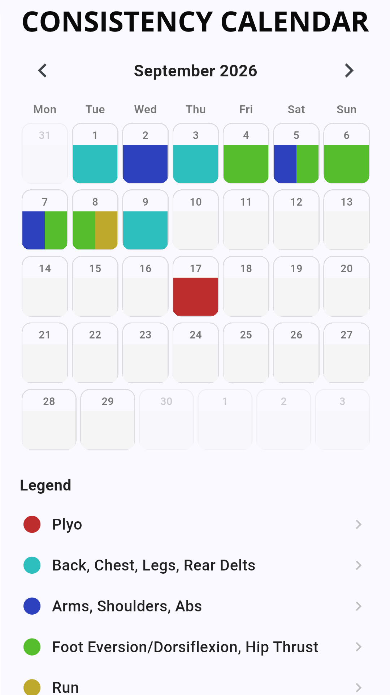
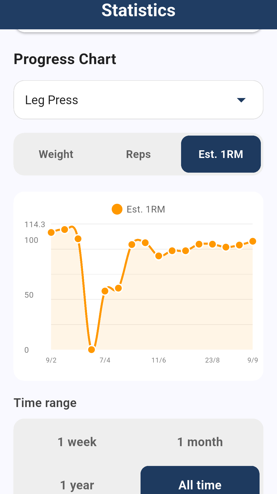
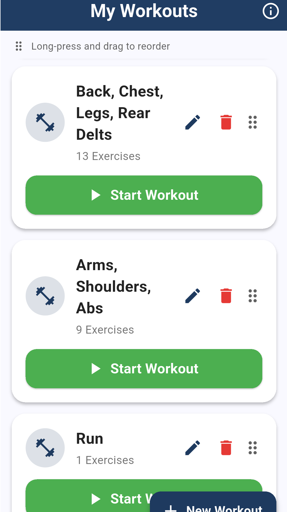
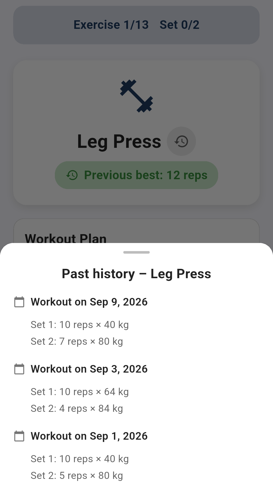

保持規律
月曆讓你一眼看見訓練規律
每次記錄訓練，月曆上就會出現對應的顏色，讓你一眼看到整個月的訓練狀況。每種顏色都代表你自訂的訓練類型，方便你發現規律，並在漏練變成長期空窗前及時察覺。
- ✓ 每種自訂訓練類型都有專屬顏色標示
- ✓ 點一下任何一天，即可查看當天訓練內容
- ✓ 自由切換月份，回顧過去的訓練紀錄

追蹤你的進步
每個動作都有詳細統計數據
你記錄的每一組動作都會轉換成清楚的進度圖表，包括重量、次數，以及預估的單次最大重量（1RM）。選擇任何動作與時間範圍，從最近一週到訓練以來的所有紀錄，清楚看見自己的進步。
- ✓ 重量、次數與預估 1RM 的互動式圖表
- ✓ 彈性選擇時間範圍，從一週到全部紀錄
- ✓ 清楚掌握每個動作的長期趨勢

打造你的訓練菜單
無限量的訓練範本
依照自己的訓練需求，建立不限數量的訓練範本，完全依照你喜歡的方式安排。依部位、分化或訓練習慣將動作分組，再用長按拖曳輕鬆排序。要開始訓練時，只需輕點一下即可開始。
- ✓ 依照你的每個訓練計畫建立不限數量的範本
- ✓ 長按拖曳即可重新排序動作與訓練
- ✓ 從自己整理好的清單立即開始訓練

訓練時掌握脈絡
訓練途中也能查看歷史紀錄
不用再猜測上次舉了多重。訓練進行到一半時，打開任何動作的歷史紀錄，即可查看先前的組數、次數與重量，在最需要的當下取得資訊，讓你更有把握地決定如何進步。
- ✓ 不必離開目前訓練，即可查看過去的組數與次數
- ✓ 一眼看見每個動作先前的最佳表現
- ✓ 即時掌握資訊，做出更明智的重量與次數決定